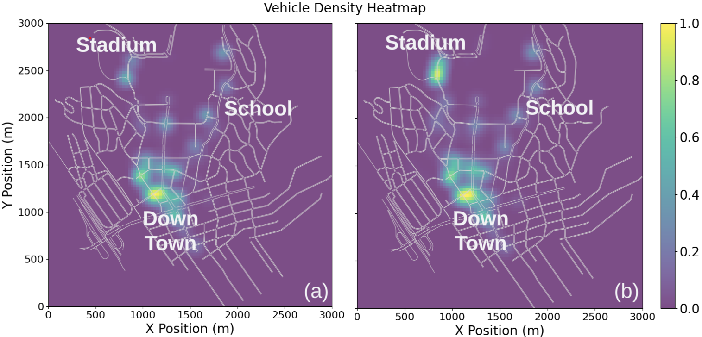

Urban Mobility Digital Twins
2023 - Present | Large-Scale Simulation and Interactive Scenario Intelligence
Project Overview
This direction builds city-scale digital twins where synthetic people, household behavior, and transportation networks interact in a shared simulation environment. The objective is to support planning and operations with controllable, interpretable scenario testing.
Motivation
Static demand forecasts are not enough for real operational decisions. Agencies and planners need systems that can model disruptions, policy changes, and event effects while preserving behavioral realism and transparent assumptions.
Goal
Build an operational digital-twin stack that combines generative mobility intelligence with network simulation so interventions can be tested quickly and compared consistently.
System Narrative
Core architecture
The architecture combines a lightweight domain simulation layer with LLM-augmented adaptive behavior modules to support scenario-driven response.

Observed city-scale dynamics
Simulation outputs reveal how local interventions propagate across the urban system, including emergent congestion and redistribution patterns.

Interactive evidence
The videos below show the operational interface and behavior response under simulation controls. Media frames use aspect-safe rendering so both horizontal and vertical captures remain readable.
Results
- Validated deployment coverage includes LA, Seattle, Mexico City, Cairo, and Tokyo.
- Pipeline usage includes 7M+ synthetic agents across validated settings.
- MobiVerse reports simulation at around 53k agents on a single PC in documented tests.
- LA-Sim demonstrates 1M-agent multimodal simulation with freeway volume reproduction around 5% RMSE.
Impact
This direction turns mobility AI into a usable planning environment. It supports rapid intervention analysis, stronger communication of scenario tradeoffs, and more trustworthy AI-assisted transportation decisions in practice.